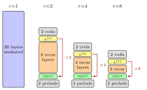

How Much Is One Recurrence Worth?
Iso-Depth Scaling Laws for Looped Language Models
News
Code release. The full architecture, training and evaluation pipelines are now available.
Version 2. Added truncated-BPTT and hyperconnections probes, new discussion sections on \(\varphi\) as decision metric and inference cost.
Abstract
We measure how much one extra recurrence is worth to a looped (depth-recurrent) language model, in equivalent unique parameters. From an iso-depth sweep of 116 pretraining runs across recurrence counts \(r \in \{1, 2, 4, 8\}\) spanning \({\sim}50\times\) in training compute, we fit a joint scaling law
\( L = E + A\,(N_\text{once} + r^{\varphi} N_\text{rec})^{-\alpha} + B\,D^{-\beta} \)
and recover a new recurrence-equivalence exponent \(\varphi = 0.46\). Intuitively, \(\varphi\) tells us whether looping a block \(r\) times is equivalent in validation loss to \(r\) unique blocks of a non-looped model (full equivalence, \(\varphi{=}1\)) or to a single block run repeatedly with no capacity gain (\(\varphi{=}0\)). Our \(\varphi = 0.46\) sits in between, so each additional recurrence predictably increases validation loss at matched training compute. For example, at \(r{=}4\) a 410M looped model performs on par with a 580M non-looped model, but incurs the training cost of a 1B non-looped one. We demonstrate the utility of \(\varphi\) as a measurement tool on two probes. Truncated backpropagation lowers \(\varphi\) to \(0.38\), indicating that the loop mechanism is poorly trained under truncation, even though validation loss decreases. Conversely, hyperconnections raise \(\varphi\) to \(0.65\), a genuine capacity gain. Our method applies to any looped LM and separates true loop improvements from token-budget gains.
What is a looped transformer?

A looped transformer iterates a shared block of layers \(r\) times per token, instead of stacking \(r\) different blocks. We adopt the prelude-recur-coda template: a few unshared prelude layers, a shared recur block of layers run \(r\) times with a latent state \(h^{(t)}\) fed back in via an injection layer, then a few unshared coda layers. At fixed effective depth (20 layers per token here), varying \(r\) trades unique parameters for parameter sharing: a non-looped baseline (\(r{=}1\)) has every layer unique, while \(r{=}8\) shares only 2 recur layers across all 8 passes.
The FLOPs per token and the effective depth stay the same across \(r\), so the architecture is a clean way to isolate the effect of parameter sharing. The natural question is then: how much of a unique block's worth does a shared block recover when we run it an extra time? That is what \(\varphi\) measures.
What does \(\varphi\) mean? Try it.
The exponent \(\varphi\) quantifies how much one recurrence is worth, in equivalent unique blocks. At \(\varphi{=}0\), the \(r\) loops add no capacity: the recurrent block contributes as a single block no matter how many times you run it. At \(\varphi{=}1\), each loop is worth a full unique block, so an \(r{=}4\) looped model is on the same loss curve as a non-looped model with four copies of that block. Our baseline fit gives \(\varphi = 0.46\), sitting between the two references, so looping currently costs more than it pays back.
Left panel: the fitted scaling law at a fixed training compute budget \(C\). Each curve shows validation loss as a function of total parameters for a given recurrence count \(r \in \{1, 2, 4, 8\}\). Its minimum is the compute-optimal allocation at that \(r\). Right panel: the law's predicted compute-optimal loss \(L^{*}(C)\) plotted against the empirical minima from our 116 runs (crosses) across six compute budgets. The vertical dashed line marks the currently selected \(C\). Drag \(\varphi\) to see how the predicted curves shift: at \(\varphi \approx 0.46\) the law's lines hug the empirical points; at \(\varphi{=}0\) or \(\varphi{=}1\) the fit degrades visibly.
Note on interpretation. Dragging \(\varphi\) here holds the other coefficients (\(A, \alpha, B, \beta, E\)) fixed at the free-\(\varphi\) fit values, so the lines show a pure slice through the loss landscape along the \(\varphi\) axis. This is useful for intuition, but it is not a counterfactual: a dataset consistent with a different \(\varphi\) would, in general, shift \(A, \alpha, B, \beta, E\) as well, since the six coefficients are jointly identified from the same residuals. The paper's teaser instead overlays a full refit at the restricted \(\varphi{=}1\), re-optimising \(A, \alpha, B, \beta, E\) under that constraint. The slider visualisation here therefore overstates how smoothly the law degrades as \(\varphi\) moves away from the point estimate. Empirical minima (crosses) are parabolic fits in \(\log N\) through each \((r, C)\) cell across the 116 training runs.
\(\Delta\varphi\) as a measurement tool
The fitted \(\varphi = 0.46\) reflects our baseline recipe. It is not a fundamental property of a looped architecture, and recipe or architecture changes can move it. The useful question is then: does an intervention raise \(\varphi\)? Raw validation loss cannot answer this on its own. A method can lower the loss simply by trading per-token training compute for more tokens at fixed budget (a token-side gain) or by raising the per-recurrence capacity of the shared block (an architecture-side gain). \(\Delta\varphi\) separates the two.
We demonstrate this on two probes. Each rerun the iso-FLOPs grid for \(r \in \{2, 4, 8\}\) at our four lower budgets, reuses the unchanged \(r{=}1\) runs, and refits the joint law:
- Truncated BPTT backpropagates gradients through only the last \(\lceil r/2 \rceil\) recurrences, saving \({\sim}30\%\) of per-token training FLOPs. Validation loss drops across all looped runs, but \(\varphi\) falls from \(0.46\) to \(0.38\). The early loops no longer receive an accurate learning signal, so each shared parameter absorbs less. The compute-optimal allocation widens and per-token inference cost rises. What looks like a methodological win is a token-budget reallocation in disguise.
- Hyperconnections [Zhu et al. 2025] replace the linear input injection with \(K{=}2\) parallel residual lanes mixed across loops. Validation loss drops and \(\varphi\) rises from \(0.46\) to \(0.65\). The \(r{=}2\) architecture even matches the non-looped \(r{=}1\) baseline at some budgets. The compute-optimum narrows, lowering per-token inference FLOPs. A genuine architectural improvement on the capacity channel.
Both probes lower loss but only one raises \(\varphi\). We therefore propose \(\Delta\varphi\) as a standard report alongside validation loss for looped LM recipe and architecture changes, so future work can credit interventions to the channel that actually produced the gain. Probing it is cheap: \({\sim}20\) runs per architecture totals \({\sim}5 \times 10^{19}\) FLOPs. Other interventions worth quantifying include shrinking the shared fraction, per-token adaptive compute, retrofitting from pretrained non-looped models, and diffusion-style training objectives. All are compatible with our joint-law framework.
BibTeX
@misc{schwethelm2026isodepthscaling,
title={How Much Is One Recurrence Worth? Iso-Depth Scaling Laws for Looped Language Models},
author={Kristian Schwethelm and Daniel Rueckert and Georgios Kaissis},
year={2026},
eprint={2604.21106},
archivePrefix={arXiv},
primaryClass={cs.LG},
url={https://arxiv.org/abs/2604.21106},
}